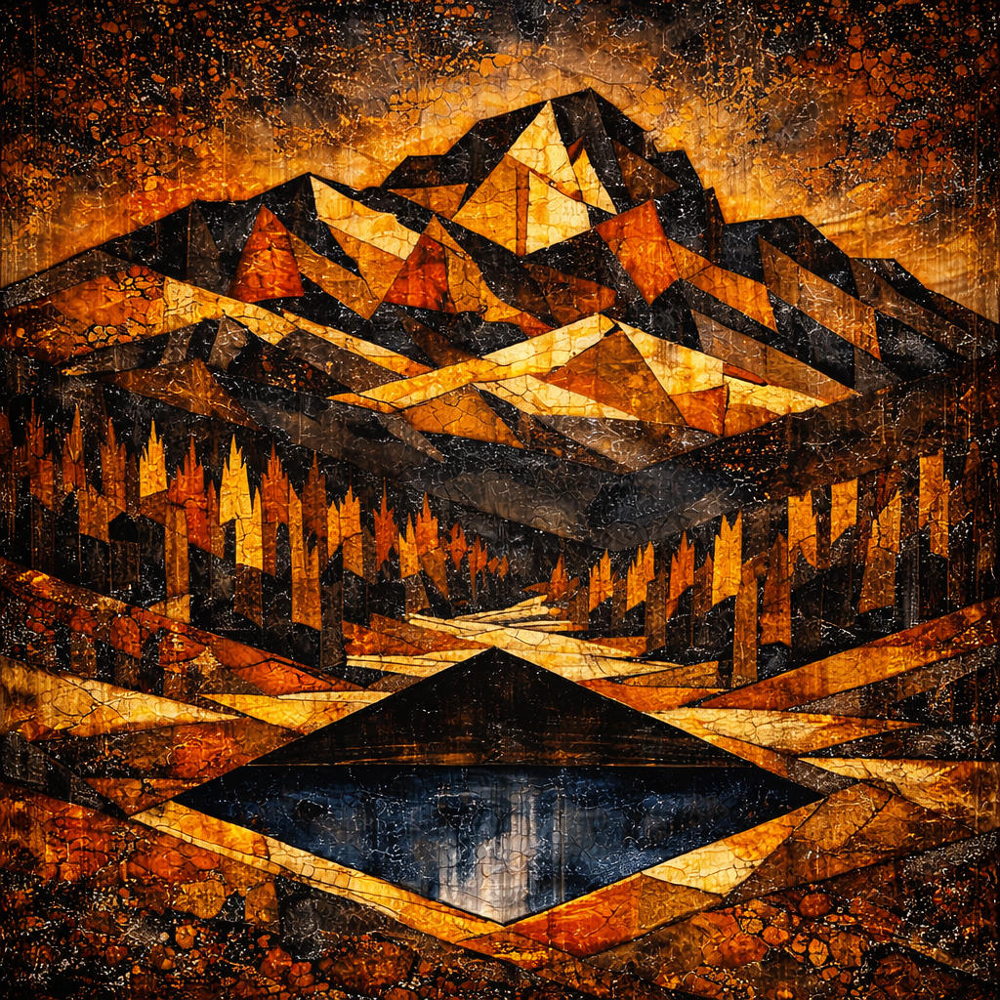

Lacquer is not merely a material. It is time, memory, and transformation made visible. My work approaches lacquer as a civilizational medium: a structure through which surfaces are constructed, memory is preserved, and permanence is imagined.